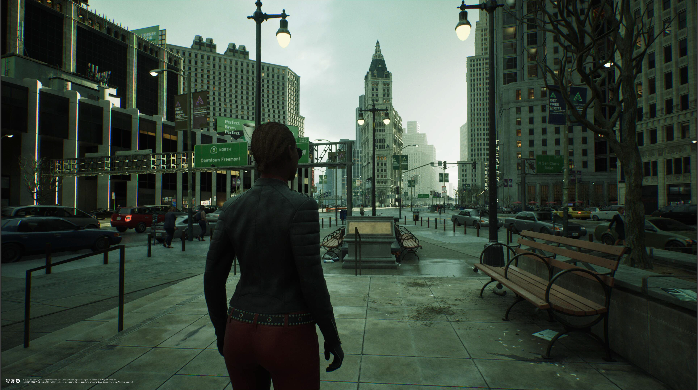

The future of technology and the future of game development is Unreal Engine 5. The main thing Unreal engine 5 tackles is lighting and how it interacts with objects in game to make the scenery more realistic. There is also a great improvement in detail without the loss of frame rates that Unreal engine 4 could never have accomplished. It is technology that will make gaming better and give the developers a new goal to achieve.
Unreal Engine uses the programming language C++ a very powerful coding language used by even Unity. It is a language used in game development where optimal resource utilization and performance are the priority. Unreal also has a visual scripting language called Blueprint that allows for people to get into game development without having to a programming language C++.
The picture is a link to another webpage where i talk more about games created in unreal engine 5 and what to look forward to.
This is an image of the Game "The Matrix Awakens" a game created in unreal engine 5 running on the playstation 5. This is the future of gaming and one that I'm excited to be a part of but also hope to have a hand in creating such great games.
github Link